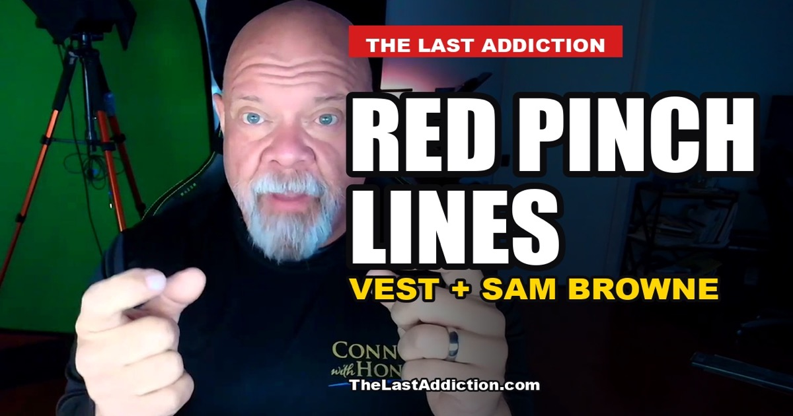

Red Pinch Lines: What My Ballistic Vest and Sam Browne Taught Me About Fat

I was a fat police officer. I wore a ballistic vest every shift. If you work in law enforcement, maybe you do too.
Here is the part nobody puts in the recruiting video. When you carry rolls of fat around your body and you strap a vest over them, the fat has to go somewhere. The vest has two straps on either side. The fat oozes out between those straps. And at the bottom of the belly, where the vest meets the top of the Sam Browne, it gets caught.
I came home with red lines. Pinch lines. Bruising, from where my fat got trapped between the bottom of the vest and the top of the belt every time I sat down in the car.
That is the whole story in one sentence. The rest of this page is about what I did with it, and what I should have done instead.
What a Sam Browne actually is
If you never wore one, the Sam Browne is the duty belt. The leather belt that carries everything. Think Batman's utility belt, except it is real, it is heavy, and you wear it for a full shift.
The one I wore was hard leather all the way around. I know departments have moved to fabric versions to take some of the load off the lower back. Even those are not soft. They are not spandex. The top edge of that belt is a hard line, and it sits right where a big belly wants to fold.
The vests were not flexible either. Level IIIA, even the IIA vests back then. Stiff panels. I do not know how much the technology has improved since. What I know is what happened when a stiff vest and a hard belt met in the middle of a soft stomach.
Where it hurt the most
Sitting in the patrol car was the worst of it. You sit, your body compresses, and the vest pushes down while the belt pushes up. The roll of fat in between has nowhere to go.
When I got on motors, it was a little easier. On a motorcycle you are not folded into that same compressed position. But in the car, shift after shift, the pinch was constant.
The hotter it was outside, the worse it got. Heat, sweat, a vest, a belt, and a roll of fat caught between them. My God, it sucked.
I changed the gear instead of the fat
This is the part I want you to really hear.
The side straps on my vest were maybe an inch and a half, two inches, three inches wide. The fat pushed out around them, and you could see it through the uniform shirt. So I went out and got really wide Velcro and had somebody make me different straps. Wider. Closed off. Thicker. Hotter, too, but they covered the fat.
That was one adjustment. There were others. Instead of losing the fat, I had all these other adjustments.
Look at that for what it is. I had a problem that left bruises on my body, and my solution was custom gear. I paid for wider straps. I put up with more heat. I engineered my way around the symptom so I would never have to face the cause.
That is how food addiction works. It does not just make you fat. It makes you creative. You become an expert at accommodating it. Bigger shirts. Longer belts. The seat pushed back. The custom strap. Every adjustment feels reasonable on its own. Together, they are a system built to protect the habit.
The adjustments are the tell
If you are reading this in uniform, or in scrubs, or in a work shirt that fits tighter than it did two years ago, ask yourself one question.
How many adjustments have I made so I do not have to change?
Count them. The extender. The bigger size. The way you sit. The thing you stopped doing because it hurts now. The custom fix you would never explain out loud.
Each one is a small surrender dressed up as a solution. I know, because I was very good at them.
Why I am telling this story now
I am not wearing that vest anymore. I dropped the fat. And the thought that hit me recently was simple: I do not miss that pain.
What I do wish is that I had done it earlier. Years earlier. Before the red lines became normal. Before the custom straps. Before I spent all that energy managing the damage instead of stopping it.
I have lost a lot of weight in my life and put some of it back. I am still in this fight. I am not writing from a mountaintop. I am writing from the middle of the war, with a long memory of what the bottom felt like.
For anyone working long shifts
Shift work makes all of this harder. You eat in the car. You eat at odd hours. You eat when the call slows down, because you do not know when the next break will come. Nobody plans to build a habit around that. It just happens, one shift at a time.
I am not going to hand you a diet. I am not a doctor, and your body is your own. What I can tell you is what I see now, looking back:
- The pain was information. Red marks on your skin at the end of a shift are your body telling you something. Listen to it before it gets louder.
- Accommodation is not a plan. Every piece of gear you modify to fit the fat is a vote to keep the fat.
- The fix starts with food, not equipment. I could not strap my way out of this. Nobody can.
- Earlier is cheaper. Every year you wait, the hole gets deeper and the climb gets longer.
If you want to understand why the late-night eating is so hard to stop, read The 9:40 Craving and The Last Easy No. They are about the decisions that happen before the fight, which is where most of us lose it.
Questions people ask
Why does my duty belt dig into my stomach? In my case, it was the fat. A stiff vest pushes down, a hard belt pushes up, and anything soft in between gets pinched, especially when you sit in a patrol car. Better gear helped a little. Losing the fat is what ended it.
Is it normal to come home with red marks from a vest? It was normal for me, which is the problem. I treated it as part of the job. Looking back, it was a warning I chose to work around. If the marks hurt or do not fade, talk to a doctor.
Can I just get a better vest or a different belt? You can, and good gear matters for your back and your safety. Just be clear with yourself about what the new gear is solving. I bought wider straps to hide the fat. That solved the look. It did not solve the problem.
Why do so many cops gain weight on the job? I can only speak for myself. For me it was long shifts, eating in the car, odd hours, stress, and a food habit I had carried since childhood. The job did not create my addiction. It gave it a lot of cover.
Where do I start? Start by counting your adjustments. Then pick one decision you can make earlier in the day, before you are hungry and tired. The free email series below walks through how I think about it.
Keep going
If this hit home, you are in the right place. Join the free email series and I will walk you through the story behind The Last Addiction, what I eat now, and the questions worth asking yourself.
Nobody is coming to save you. That is not bad news. It means the fix is in your hands.
Connor MacIvor is not a doctor or therapist. This article is personal experience and general education, not medical advice. Talk with a licensed physician before changing how you eat or starting any fasting protocol, especially if you take medication or have a health condition. If you are struggling with an eating disorder, contact the National Alliance for Eating Disorders at 1-866-662-1235.